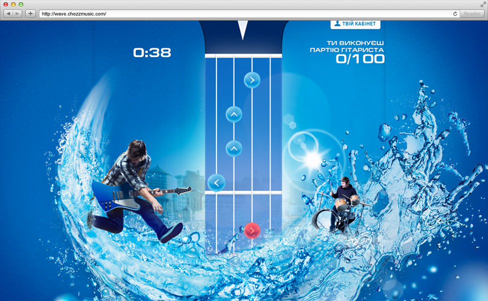
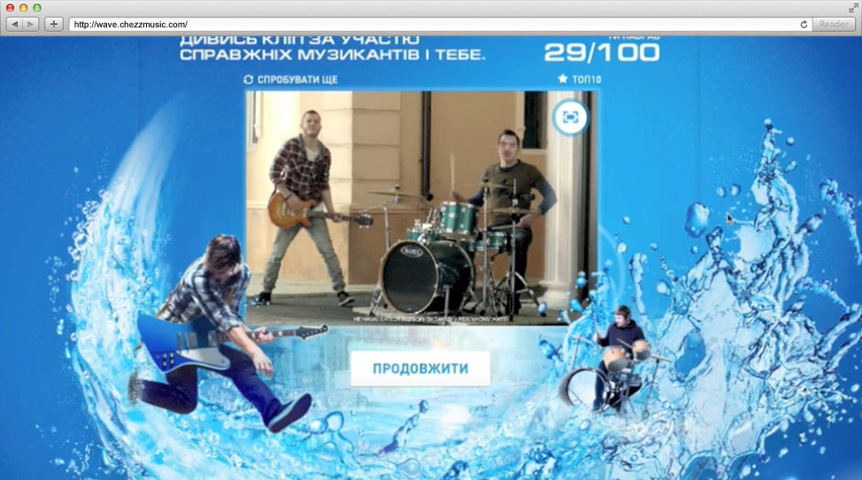
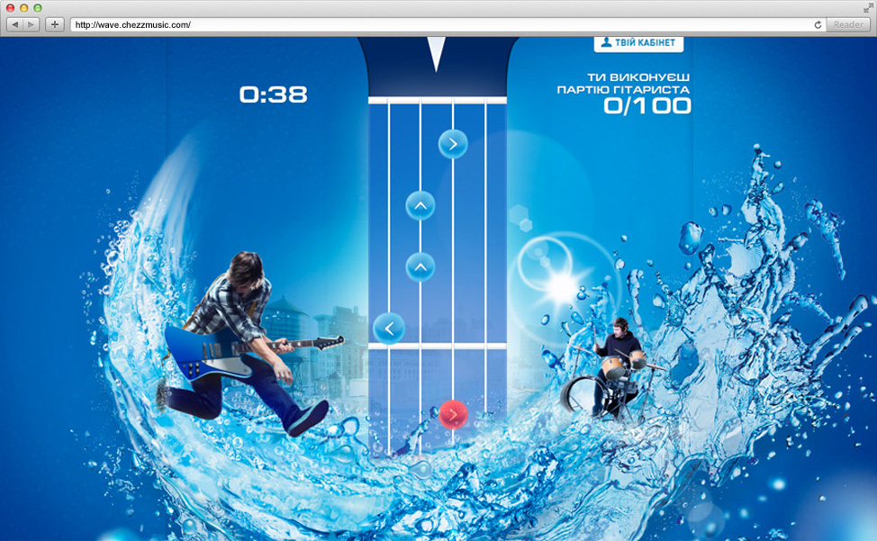
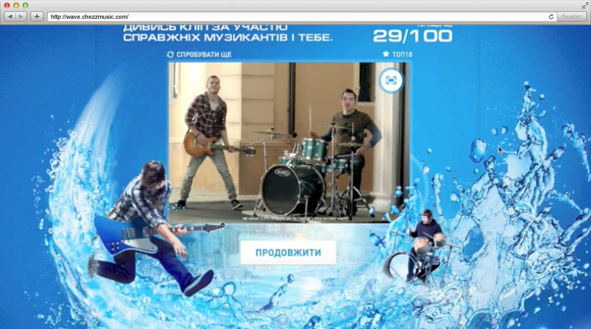

CHEZZ
catch wave of freshness
catch wave of freshness
http://wave.chezzmusic.com
 
Задача
Разработать игровой промо-сайт для кампании «Поймай волну свежести» для бренда Chezzz. Достичь максимального распространения в социальных сетях.
Реализация
Пользователю предлагалась загрузить свою фотографию и сыграть в игру, пытаясь максимально точно повторить музыкальную партию гитары или барабанов. В качестве награды игрок получал музыкальный клип, в котором он участвует в качестве одного из музыкантов.
В видео встраивалась сглаженная 3D модель головы. На нее накладывалась сгенерированная на основе фотографии пользователя текстура. Текстура генерировалась следующим образом: с помощью openCV определялось положение глаз и рта, цветовая гамма фотографии приближалась к исходной текстуре, потом на существующую текстуру накладывалась фотография, а поверх нее корректирующий слой. Позднее можно было точнее подстроить текстуру.
Позднее человек мог поделиться в социальных сетях доказательством того, что он снялся в музыкальном клипе.
Проект выполнен на технологии Adobe Flash.